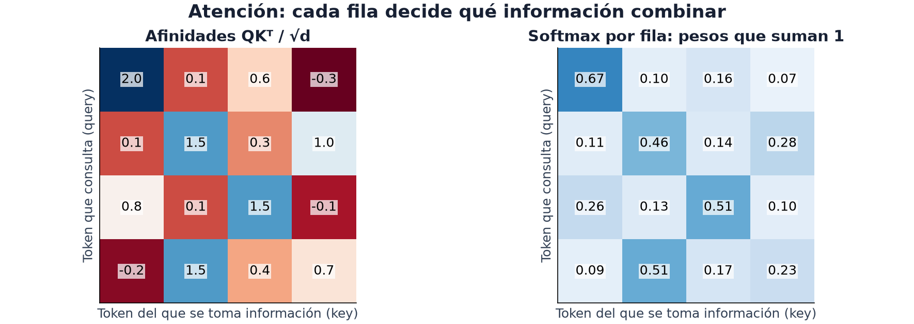

13 · Atención y Transformers
Nivel 2 — Deep learning · Ruta de Aprendizaje
En el módulo 12 resumimos vectores de tokens. Pero antes de resumirlos conviene que cada token incorpore contexto: «banco» no significa lo mismo junto a «plaza» que junto a «préstamo». La atención permite que una posición reúna información de otras y cambie su representación según la secuencia.
Reunir información de otras posiciones
Un MLP puede procesar cada token por separado, pero así no intercambia información entre posiciones. La atención construye una mezcla para cada una: cuánto tomar de cada vector disponible depende del contenido y de qué posiciones se permite consultar.

Cada fila es una posición que consulta; cada columna, una posición de la que puede tomar información. En la primera fila, la afinidad 2.0 recibe un peso aproximado de 0.67, mayor que el de las otras columnas. Los cuatro pesos suman 1, salvo el redondeo del dibujo. Atención no elige obligatoriamente una única columna: reparte cuánto aporta cada una.
Todavía falta aplicar esos pesos a los valores que se van a mezclar. En un
ejemplo aparte de tres posiciones, si los pesos son (0.5, 0.25, 0.25) y los
valores son (2,0), (0,4) y (4,4), la salida es:
0.5·(2,0) + 0.25·(0,4) + 0.25·(4,4) = (2,2)
Es un promedio ponderado, calculado coordenada por coordenada. Cada posición puede usar una mezcla distinta.
Qué representan Q, K y V
Para decidir la mezcla, transformamos los vectores de entrada con matrices entrenables. En auto-atención, las tres transformaciones parten de la misma secuencia, pero tienen funciones distintas:
- Q, queries o consultas: representa qué relaciones busca cada posición.
- K, keys o claves: representa cómo se compara cada posición con las consultas.
- V, values o valores: contiene la información que se combinará.
«Buscar» y «ofrecer» son metáforas para operaciones aprendidas. El producto punto entre una consulta y una clave da una compatibilidad. No es necesariamente similitud semántica ni coseno: sus vectores no tienen por qué estar normalizados.
Si hay n posiciones y consultas y claves de d coordenadas, Q y K tienen
forma (n,d). Transponer K permite comparar todos los pares en Q @ K.T,
que tiene forma (n,n). Softmax se aplica por fila, sobre las claves:
Atención(Q, K, V) = softmax(Q Kᵀ / √d) V
La última multiplicación mezcla las filas de V. Si V tiene (n,d_valor),
la salida tiene (n,d_valor): conserva una representación por consulta. El
siguiente bloque añade el eje de lote y usa d_valor=d=4. Sus Q, K y V son
aleatorios para aislar la operación, sin entrenar un encoder.
# bloque: probado; id: atencion_escalada
import torch
import torch.nn as nn
d = 4
q = torch.randn(1, 3, d) # (lote, posiciones, dimensión)
k = torch.randn(1, 3, d)
v = torch.randn(1, 3, d)
pesos = torch.softmax(q @ k.transpose(-2, -1) / d ** 0.5, dim=-1)
salida = pesos @ v
# y coincide con la implementación de PyTorch
referencia = nn.functional.scaled_dot_product_attention(q, k, v)
print(torch.allclose(salida, referencia, atol=1e-6)) # True
print(pesos.sum(dim=-1)) # tensor([[1., 1., 1.]])Que cada fila sume 1 permite interpretar sus números como pesos relativos de una mezcla. No significa que esos pesos expliquen por sí solos la decisión final de toda la red.
¿Por qué dividir por √d? Un producto punto suma d contribuciones. Si
las coordenadas tienen escalas comparables y no están fuertemente correlacionadas,
su variación crece con d. Compatibilidades muy distintas vuelven el softmax
casi una elección única, donde los cambios pequeños pueden producir gradientes
muy pequeños. La división controla esa escala bajo esas condiciones; no asegura
que la atención nunca se concentre.
Máscaras: qué información está disponible
Una máscara excluye conexiones antes de calcular los pesos. En la fórmula,
una posición prohibida recibe compatibilidad −∞, de modo que su peso sea 0;
las posiciones permitidas vuelven a repartirse la unidad de atención.
Una máscara de padding impide tomar información del relleno que usamos para igualar largos. Una máscara causal impide consultar posiciones futuras. Al predecir el siguiente token desde una secuencia ya dada, la posición actual puede ver su propio token y los anteriores, pero no el siguiente que intenta predecir. Así se evita filtrar la respuesta durante entrenamiento.
Las APIs no siempre interpretan igual una máscara booleana: en
scaled_dot_product_attention,
True permite atender; en
MultiheadAttention,
True bloquea esa conexión. La attention_mask habitual de HuggingFace usa 1
para tokens válidos y 0 para padding. Una fila completamente excluida necesita
tratamiento especial: no representa un promedio ordinario.
Multi-head: varias atenciones en paralelo
Una cabeza de atención usa sus propias proyecciones Q, K y V. Multi-head aplica varias en paralelo, concatena sus salidas y las vuelve a proyectar. Distintas cabezas pueden aprender relaciones diferentes; no se les asigna de antemano una función como «gramática» o «referencia».
# bloque: fragmento
atencion = nn.MultiheadAttention(embed_dim=64, num_heads=8, batch_first=True)
salida, pesos = atencion(x, x, x) # auto-atención: Q, K y V del mismo inputAquí x debe tener forma (lote, posiciones, 64). Las ocho cabezas usan ocho
coordenadas por cabeza; la salida conserva (lote, posiciones, 64). Pasar x
tres veces indica el origen de consultas, claves y valores: el módulo realiza
internamente las proyecciones aprendidas. En atención cruzada, las consultas
pueden venir de una secuencia y las claves y valores de otra.
El bloque Transformer
Un Transformer combina bloques con la misma estructura, normalmente con pesos distintos. Un bloque común de encoder alterna:
- Auto-atención multi-head, que mezcla información entre posiciones.
- Conexión residual y normalización de capa.
- Un MLP aplicado a cada posición, que transforma sus coordenadas.
- Otra conexión residual y normalización.
Una conexión residual suma la entrada al resultado de una transformación:
x + transformación(x). Conserva un camino directo para la información y el
gradiente; facilita entrenar redes profundas, sin eliminar todos sus problemas.
Las formas deben coincidir para sumarlas.
LayerNorm, o normalización de capa, normaliza las coordenadas de cada posición y aprende una escala y un desplazamiento. No usa los promedios entre lotes de BatchNorm del módulo 11. Existen variantes que normalizan antes o después de cada transformación; la lista muestra una estructura, no el único orden posible.
Codificación posicional: la atención no sabe de orden
Si la atención completa no usa posiciones ni una máscara que dependa del orden, barajar la entrada también baraja la salida. Los vectores siguen siendo los mismos, solo cambian de lugar. Esa propiedad se llama equivarianza a permutaciones. Después de promediar esas salidas, perderíamos incluso la pista de dónde quedó cada token.
Por eso el modelo necesita una señal de posición para distinguir «el perro muerde al hombre» de «el hombre muerde al perro». Una opción suma a cada embedding un vector de posición: una tabla aprendida o senos y cosenos de distintas frecuencias. Otras arquitecturas incorporan distancias o posiciones relativas dentro de la atención.
Find the Order pide recuperar el orden de turnos de un diálogo. La tarea ilustra por qué el orden contiene información, aunque añadir posiciones a un Transformer no resuelva automáticamente una secuencia cuyo orden correcto aún se desconoce.
Encoder, decoder, o los dos
| Arquitectura | Qué información combina | Usos y ejemplos |
|---|---|---|
| Encoder | cada posición consulta la entrada completa, salvo padding u otras máscaras | representación y clasificación: BERT, ViT, bge |
| Decoder causal | cada posición consulta su prefijo, incluida la posición actual | predecir el siguiente token: GPT, Qwen |
| Encoder-decoder | el encoder representa la entrada; el decoder consulta su prefijo y, por atención cruzada, la salida del encoder | traducción o transcripción: T5, Whisper |
En generación, el decoder predice un token, lo incorpora al prefijo y repite. Durante entrenamiento puede calcular muchas predicciones a la vez porque la máscara causal impide mirar sus respuestas futuras.
Ghost of the Machine permitía bge-base-en-v1.5, un encoder de texto.
Sus representaciones podían ayudar a localizar un cambio entre frases; no
disponía por sí solo de un mecanismo de generación de texto. La salida y el
entrenamiento del modelo importan tanto como el nombre «Transformer».
ViT: la misma cosa, con parches
Un Vision Transformer divide la imagen en parches, aplana cada parche y lo
proyecta a un vector. Esos vectores son sus tokens. Por ejemplo, una imagen
224×224 con parches 16×16 produce 14×14=196 parches; cada parche RGB
contiene 16×16×3=768 valores antes de la proyección. El modelo puede añadir
además un token especial y señales de posición.
Una CNN conecta primero vecindarios locales; la atención puede relacionar parches distantes desde un mismo bloque. Son sesgos inductivos: formas en que la arquitectura favorece ciertos patrones. No implican una ganadora para todas las imágenes. Double Agent Dilemma explora las diferencias entre un ResNet-18 y un ViT-Tiny mediante perturbaciones que buscan hacerlos discrepar.
El Syllabus IOAI incluye atención y Transformers como teoría y práctica en texto e imagen. Las otras modalidades y arquitecturas tienen su propio alcance en el temario; no se deduce solo a partir del nombre del modelo.
⚠️ Las tres trampas
1. La atención densa tiene costo cuadrático en el largo. La matriz
Q Kᵀ tiene n × n elementos: duplicar el largo cuadruplica ese término de
cómputo y el almacenamiento si se materializa la matriz. Kernels optimizados
pueden evitar guardarla completa; el tiempo total del modelo también incluye
otras operaciones y no tiene por qué multiplicarse exactamente por cuatro.
Con secuencias largas, ese término puede dominar el presupuesto. Acortar
la secuencia reduce trabajo, pero también puede eliminar la señal que se
necesita predecir.
2. Truncar sin mirar. Cuando activas truncación en el tokenizador, puede
recortar la entrada a max_length. Si la información necesaria queda fuera,
ninguna capa posterior podrá recuperarla.
Compara la distribución de largos con tu max_length antes de fijarlo — es el
módulo 01 aplicado a tokens.
3. Olvidar la máscara de atención. Con secuencias de largo variable hay
padding, y sin máscara el modelo atiende al relleno. Los tokenizadores de
HuggingFace devuelven attention_mask justamente para eso: hay que pasarla.
🏋️ Práctica
| # | Ejercicio | Fuente | Qué practica |
|---|---|---|---|
| 1 | ⭐⭐ Construye un Transformer desde cero, línea por línea | Karpathy — Zero to Hero, clases 6-7 | conectar embeddings, atención y predicción |
| 2 | Implementa la atención en tres líneas y compárala con scaled_dot_product_attention | — | que la fórmula sea tuya |
| 3 | Baraja los tokens de una atención sin posiciones ni máscara causal | — | la propiedad menos obvia |
| 4 | The Illustrated Transformer | jalammar.github.io | la intuición visual |
| 5 | ⭐ Mide cómo crece el tiempo de la atención al duplicar el largo | — | comparar el término teórico con el tiempo medido |
En el 5 separa predicción teórica y medida: calienta el kernel, repite varias
veces y sincroniza CUDA antes y después del cronómetro si usas GPU. Compara
256 y 512 tokens y explica por qué el tiempo real puede no crecer por cuatro.
Usa la medida para elegir max_length sin descartar información esencial.
🎯 Mini-desafío (formato IOAI)
Tarea: Find the Order (IOAI 2026, día 1), la parte de ordenar. Salta el audio: parte de las transcripciones ya hechas (o de textos cualquiera partidos en turnos y barajados). Métrica: exactitud de orden por pares:
1 − inversiones / pares, promediada por diálogo.El número de permutaciones crece muy rápido: siete turnos tienen 5.040 órdenes posibles; veinte tienen más de
10¹⁸. Una alternativa es puntuar pares y construir un orden a partir de esas preferencias. Pueden aparecer ciclos —A antes que B, B antes que C, C antes que A—, por lo que todavía hace falta una regla para resolver conflictos. En la tarea original,prefix.jsonproporciona los dos primeros turnos como ancla.Fíjate en lo que hace la métrica por ti: al medir por pares, un orden casi correcto puntúa casi bien. No hace falta acertar la permutación exacta — es exactamente el tipo de cosa que se deduce leyendo la métrica antes de programar (módulo 04).
Para explorar
Visualiza la matriz de atención como un mapa de calor. Baraja los tokens sin posiciones y mira cómo se reorganizan filas y columnas; agrega posiciones y repite.
Compara dos textos que se distingan solo al final. ¿Qué parte de la tarea desaparece al truncarlos, aunque el modelo sea más rápido?
← 12 - Embeddings · Ruta de Aprendizaje · 14 - Fine-tuning y LoRA →